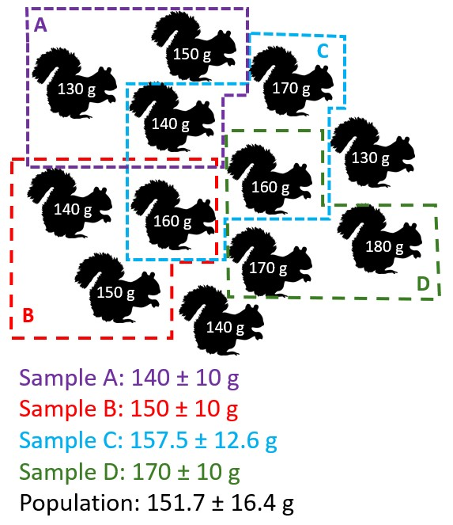
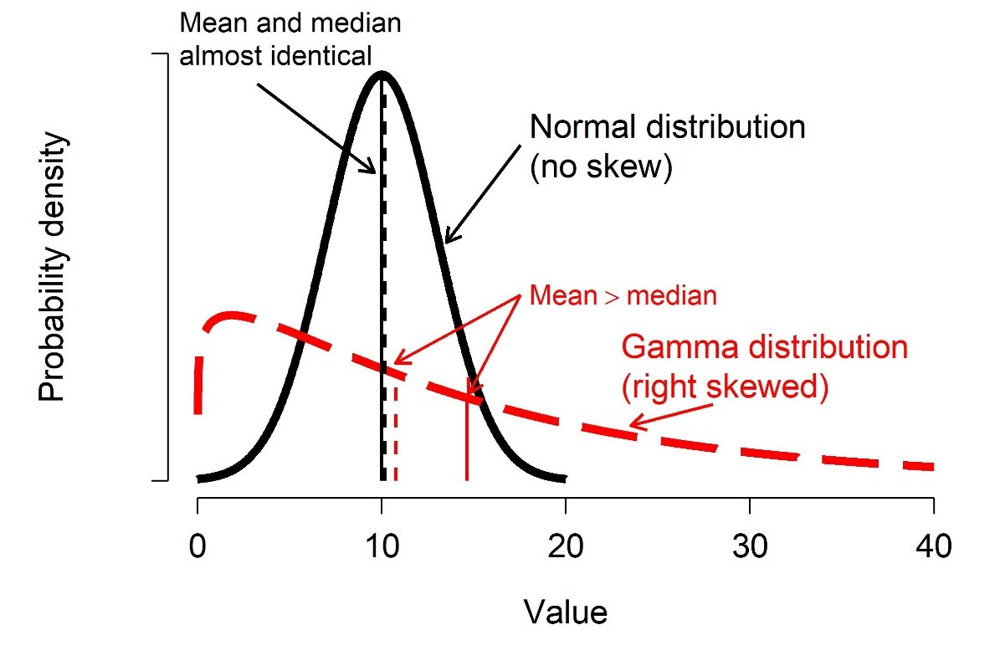
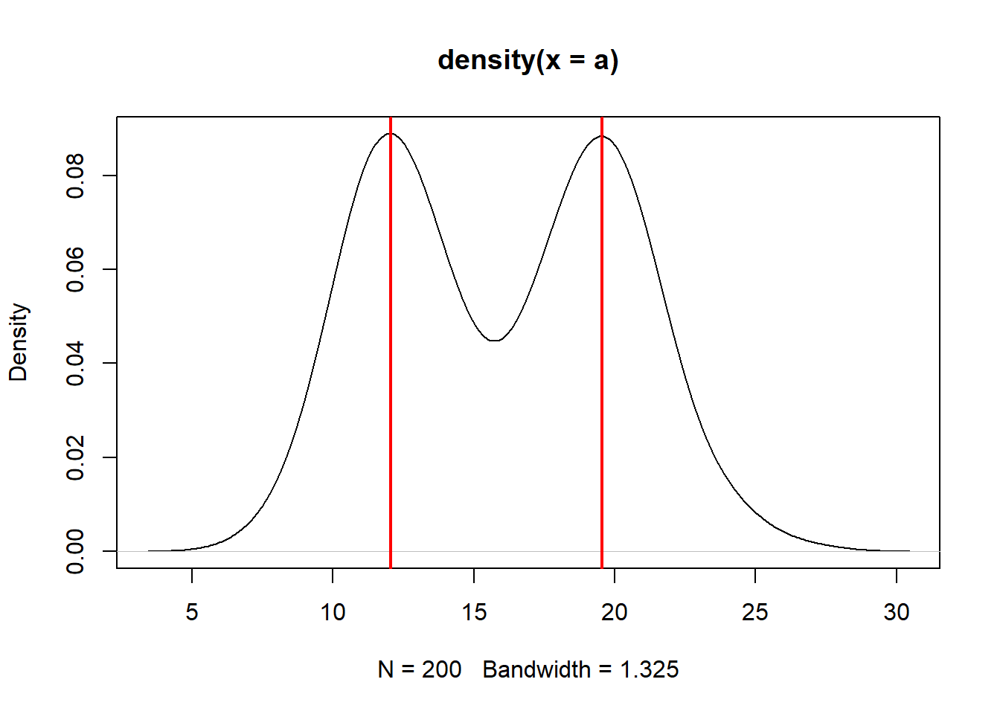
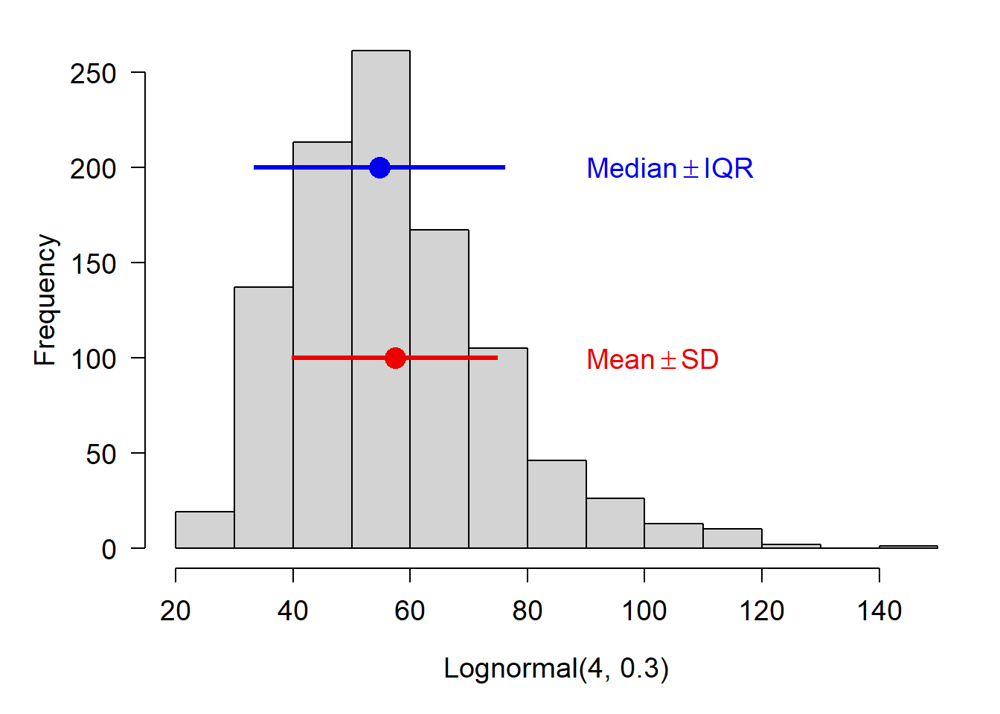
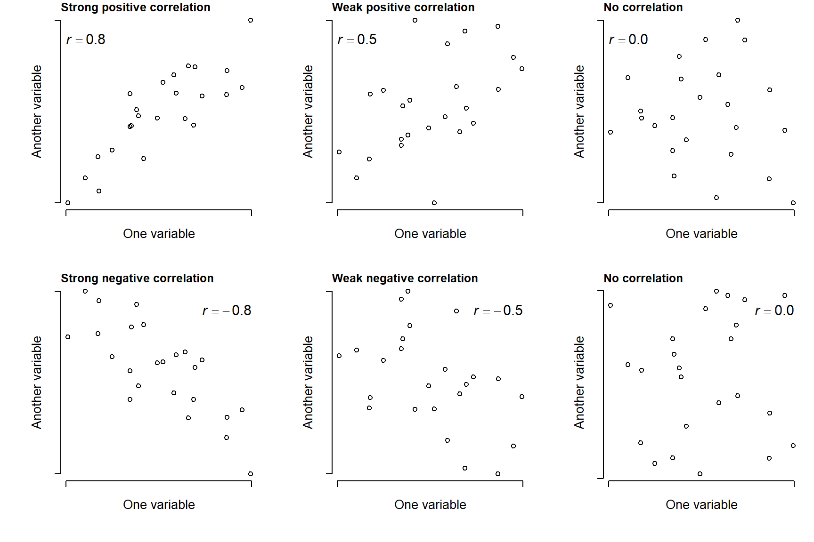
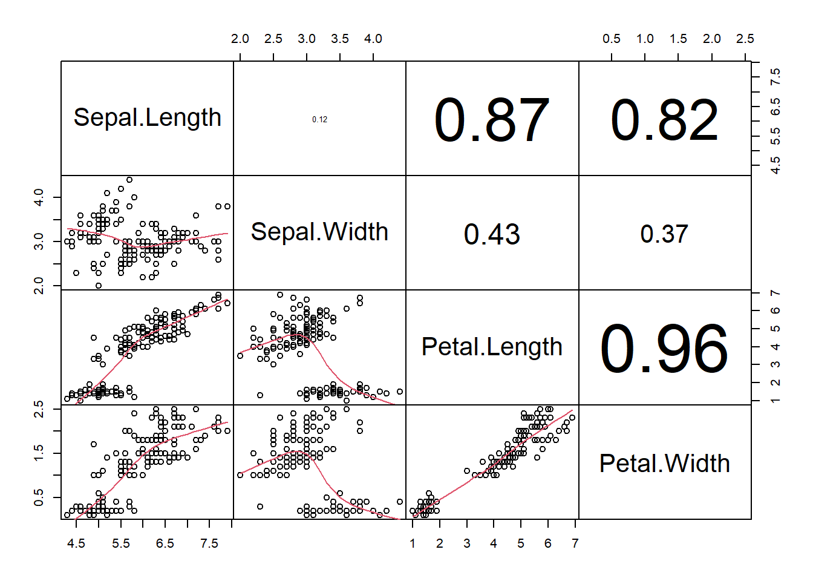
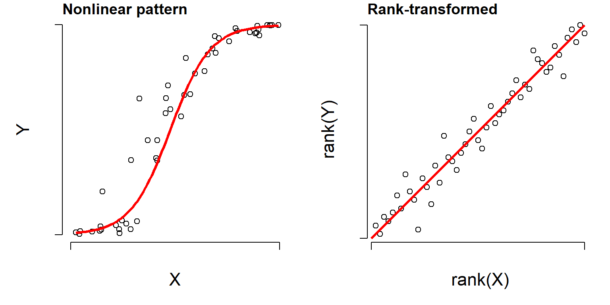

One of the first steps in exploratory data analysis is understanding how values in a variable are spread out (aka: distributed), and what a “typical” value is.
Biologists use a few common summary statistics, or descriptive statistics, to describe variables. What makes descriptive statistics is that they are calculated directly from the data, and do not estimate any unknown parameters. Estimating unknown parameters is the realm of inferential statistics. Any method that tests a hypothesis–such as a t-test, ANOVA, linear regression, etc.–is an inferential technique.
6.1 Sample and population statistics
In biology, we never have all of the possible values which could be observed. For example, if you wanted to study the body masses of squirrels, you could go and collect, say, 30 squirrels and weigh them. However, those 30 are only a small fraction of the millions of squirrels alive in the world. You would be assuming that your 30 squirrels somehow represent all squirrels.
The values that are observed are samples, and they are summarized by sample statistics.
The set of all possible values that could be observed, even if only in principle, are the population. Population parameters or population statistics describe this set of all possible values.
In science, we usually want to estimate population parameters, but these are unobservable. Instead, we use sample statistics to estimate the parameters of the underlying population.
Illustration of how sampling bias can affect estimates of population parameters like the sample mean \(\bar{x}\) and sample standard deviation \(s\).

In the figure above, the population mean of all squirrels is 151.7 g. However, finding all squirrels in an area (much less the world) is not practical. So, researchers took 4 samples of a few squirrels each, and obtained sample means of 140, 150, 157.5, and 170 g. Notice that the mean of these sample means, 154.38 g, is pretty close to the population mean. In fact, the more squirrels you include in your sample, the less uncertain your estimate of the mean will be. In the figure below, notice that as the size of the sample increases, the range of estimates of the mean shrinks.
The central tendency of a variable is a value that represents a “typical” value from that set of values. Central tendency is usually expressed in one of three ways:
Mean: the sum of values divided by the number of values. This value is also called the “arithmetic mean”. Answers the question, “What value would all values be if they were the same?”. When people say “mean” or “average”, this usually what they are referring to. The mean is useful because it is one of the defining features of the normal distribution, a foundational concept in modern statistics.
Median: the middle value, which is greater than half of the values and less than the other half of the values. Also known as the 50th percentile or 0.5 quantile. Answer the question, “If you lined up the values from smallest to largest, what value would be in the middle?”.
Mode: the most common value.
For many datasets, the mean and median will be approximately the same. Data that are skewed will have a median different from their mean.
Illustration of skew. The solid black line shows an unskewed distribution that is roughly symmetrical about its mean, with its mean and median almost identical. The dashed red line shows a right-skewed distribution that has mostly small values and very few large values. Its median is very different from its mean.

Biologists typically summarize data using the mean, but median can be appropriate in some situations–especially when data are not normally distributed.
6.2.1 Means
6.2.1.1 Arithmetic mean
The arithmetic mean or just mean is the value that all values would be if they were all the same. Biologists consider both the sample mean\(\bar{x}\) and the population mean\(\mu\).
The population mean\(\mu\) is the mean of all possible observations, and defines the underlying distribution of values. This can be a parameter of a distribution, but is usually unknown in practice and has to be estimated from data.
The sample mean is \(\bar{x}\) the mean of observed values.
The sample mean is calculated as the sum of all values in x divided by the number of values n:
\[\bar{x}=\frac{\sum_{i=1}^{n}x_i}{n}\]
The mean is useful because it is part of the definition of the normal distribution, a very important concept in modern statistics.
You can get the mean of a variable in R using the function mean():
# random normal dist. with mean = 5 and sd = 1x <-rnorm(100, 5, 1)mean(x)
[1] 4.975233
Like many summarization functions in R, mean() does not automatically handle missing values (NA). If your dataset contains missing values, you need to set the argument na.rm=TRUE. This can seem like an annoying bug, but it’s actually a feature. By returning NA when the data contain missing values, R is helping you track down where missing values are coming from (and thus, why your code may not be working at some later point).
The geometric mean is sometimes used for values that are meant to be multiplied together, such as growth rates. One application is in comparative morphology, where the geometric mean of a set of anatomical measurements is used as a sort of overall measure of body size against which individual measurements can be relativized. For example, a morphologist might calculate the geometric mean of 15 skull measurements to arrive at the size of a “hypervolume” which represents skull size.
Because of the way that it is defined, the geometric mean is only defined for positive real values.
There is no base function for geometric mean, but it’s easy to get by combining base functions.
# lognormal with logmean 2 and logsd=0.5x <-rlnorm(10, 2, 0.5)# custom function for geometric mean:geomean <-function(x){exp(mean(log(x)))}# test it out:geomean(x)## [1] 6.006933# another way:geomean2 <-function(x){prod(x)^(1/length(x))}geomean2(x)## [1] 6.006933
6.2.1.3 Harmonic mean
The harmonic mean is less common than the arithmetic or geometric means. It is used when an average rate is needed. The harmonic mean is the reciprocal of the arithmetic mean of reciprocals of the values:
An example use case for the harmonic mean is as follows: a migrating bird travels from Atlanta to Knoxville, Tennessee (250 km) at an average speed of 60 km/h, and then from Knoxville to Lexington, Kentucky (230 km) at an average speed of 52 km/h. Its average speed on the trip is not the arithmetic mean of the speeds, but the harmonic mean:
I’m not aware of a base function for harmonic means, but it is easy to get:
# only defined for postive real valuesa <-rlnorm(20, 3, 1)# custom function to get harmonic meanhar.mean <-function(x){1/(mean(1/x))}# compare mean, geometric mean, and harmonic mean:mean(a)## [1] 23.34804geomean(a)## [1] 17.57076har.mean(a)## [1] 13.6796
Interestingly, for any set of positive values with at least 2 unique values, the following inequality will always be true:
Sometimes we need to some observations to count more than others. The weight of an observation is the amount that it contributes to a statistic or analysis. A weighted mean is useful when some observations represent more data or experimental units.
For example, when trying to calculate the mean mass of elephants across multiple populations, it might make sense to calculate the mean of the population-level means, but weight the population means by the number of elephants measured in each population. This would be done because the populations with more measurements represent more data, and thus give us greater confidence about what the true mean might be.
The R function for the weighted mean takes a set of values x and weights w. The weights in w must add up to 1.
# make some valuesx <-c(14, 3, 5, 4)# weights# defining as fractions over total# sample size will guarantee sum(wts)==1wts <-c(10, 1, 1, 2)/14# compare mean to weighted meanmean(x)## [1] 6.5weighted.mean(x, wts)## [1] 11.14286
6.2.2 Median
The median is the central value of a set of values. If you were to rank the values from smallest to largest, the median would be the value in the middle (or, if there were an even number of values, the median would be the mean of the two central values). The median is also known as the 50th percentile, or 0.5 quantile.
The median is sometimes a more useful measure of central tendency than the mean when data are strongly skewed. A classic use case is personal income. In 2020, the US median household income was about $67000. It’s hard to find exact numbers, but at one point in 2020 Jeff Bezos had made about $13 billion since 2019. This implies that in a room with 99 “average” Americans and 1 Jeff Bezos, the mean annual income was about $130 million. Is that a good representation of what most households made?
Of course not. However, the median would be about $67000, which would be more representative.
The easiest way to get the median in R is with the median() function. You can also use quantile() with argument probs (the second argument) set to 0.5.
x <-rnorm(100)median(x)## [1] -0.1001767quantile(x, 0.5)## 50% ## -0.1001767
6.2.3 Mode
The mode is the most common value in a set of values. For many distributions, the mode will be the same as, or close to, the mean and median. Most distributions have one mode, or are unimodal. Another common case is distributions with two modes, or are bimodal.
There is no base function to get the mode, but it can be obtained in several ways by combining base functions.
# generate some random values in 1:8set.seed(123)a <-sample(1:8, 20, replace=TRUE)# simple function for mode# Will return >1 result if >1 mode.# Capitalized because already a function called "mode" that# does something else and don't want to overwrite itMode <-function(x){ un <-sort(unique(x)) ta <-table(x) mx <-max(ta)return(un[which(ta==mx)])}Mode(a)## [1] 3# illustration with 2 modes:b <-c(4,4,4,3,3,3,2,1)Mode(b)## [1] 3 4
Another way to get the mode is to find peaks on a kernel density plot. We’ll discuss what these plots really mean later in Section 8.1.5, but for now, a kernel density plot shows how likely different values are a distribution. This method might be more useful when there are many values, or the values have a great deal of precision, making it hard to find a mode by counting up occurrences.
In the example below, the distribution has a peak around \(x=12.01\). This means that the mode is about 12.01, which is very close to the mean and median as well as the true mean used to generate the distribution.
# function to estimate modeMode2 <-function(x){ de <-density(x)return(de$x[which.max(de$y)])}Mode2(a)
[1] 12.0136
The function we made, Mode2(), works well enough if there is only one mode.
But, many real life distributions have \(>1\) mode. Such distributions are called bimodal if they have 2 modes, or multimodal if they have 3 or more. A classic example of bimodality is grades in college courses: it is very common to have many Bs, and many Ds, but not many Fs, Cs, or As.
If your data appear to have \(>1\) mode, you can estimate them by finding points where the slope of the density plot changes sign. The code below is inelegant but it works.
set.seed(123)a1 <-rnorm(1e2, 12, 2)a2 <-rnorm(1e2, 20, 2)a <-c(a1, a2)den <-density(a)# shows bimodal distribution:plot(den)# function to find peaks on density plot# i.e., where slope changes from positive to negativeMode3 <-function(x){ de <-density(x) dif <-diff(de$y) flag <-numeric(length(dif))for(i in2:length(dif)){if(dif[i-1] >=0& dif[i] <0){flag[i] <-1} }#i return(de$x[which(flag==1)])}Mode3(a)
[1] 12.03519 19.55226
abline(v=Mode3(a), lwd=2, col="red")

6.3 Variability
6.3.1 Variance and standard deviation (SD)
Variability, both random and otherwise, is the sine qua non of statistics. If it weren’t for all the uncertainty and variability inherent in experimental and real world data, data analysis would be a lot easier and we would barely need a whole field for it. Understanding variability starts with summarizing it.
The classical way to express the variability in a dataset is the variance. Just like with the mean, we use different symbols for different variances:
The population variance\(\sigma^2\) (“sigma squared”) defines the normal distribution, and describes the spread of all possible observations.
The sample variance\(s^2\) (“s squared”) is the variance of a set of observations (i.e., a sample).
The variance is defined as the expected (mean) squared deviation from the mean:
The sample variance of a set of observations is calculated the same way, except the sample mean \(\bar{x}\) replaces the population mean \(\mu\) in the expression.
Like the mean \(\mu\), the variance \(\sigma^2\) is part of the definition of the normal distribution and so it shows up a lot in statistics.
The differences between each value \(x_i\) and the mean are squared for two reasons: first, so that positive and negative deviations do not cancel out (because the square of any real number is positive); and second, so that greater deviations count more than small deviations.
The main drawback of the variance is that it is in squared units of the original values. For example, the variance of a set of length measurements taken in cm will be in units of cm2. Trying to think about lengths in units of area is kind of silly.
For this reason, the variance is often expressed as its square root, the standard deviation (SD). As with the variance and mean, we use different symbols to distinguish between the population SD\(\sigma\) (“sigma”) and the sample SD\(s\).
The expression for the sample SD is the same, except that the sample variance \(s^2\) replaces the population variance \(\sigma^2\). Because the SD is the square root of the variance, it is in the same units as the original measurements (and thus, the mean). This makes SD easier to interpret than the variance.
For even more convenience, the coefficient of variation (CV) is the ratio of the SD to the mean. Some people prefer CV to SD because it allows comparisons between variables with very different means or SD. CV can be expressed as ratios or as percentages. Whichever you use, just be clear about what you did.
set.seed(123)# different SD, same CV:a <-rnorm(1000, 4, 2)b <-rnorm(1000, 20, 10)# function for CV:cv <-function(x, pct=TRUE){ res <-sd(x)/mean(x)if(pct){return(100*res) } else {return(res) }}sd(a)## [1] 1.98339cv(a) # as percent## [1] 49.1881cv(a, FALSE) # as ratio## [1] 0.491881sd(b)## [1] 10.09674cv(b) # as percent## [1] 49.43409cv(b, FALSE) # as ratio## [1] 0.4943409
6.3.1.1 Do not calculate the standard error (SE)
Another statistic related to the variance is the standard error (SE), sometimes also called the “standard error of the mean (SEM)”. It is calculated as:
In other words, the SE is the ratio of the sample SD to the square root of the sample size.
There is no built-in function for standard error (SE) so it must be calculated using the sample size (function length()). Note that you should probably never compute SE because SD is more appropriate in almost every situation where you would think to calculate it. This is because the SE is a statement of uncertainty about a mean or point estimate, whereas SD is a statement about variability among values.
If you insist on calculating SE, here is how:
a <-rnorm(50)var(a)## [1] 0.8029621sd(a)## [1] 0.8960815sqrt(var(a)) # equivalent to sd(a)## [1] 0.8960815# standard error of the meansd(a)/sqrt(length(a))## [1] 0.1267251
Again, you almost certainly should not calculate a SE.
6.3.2 Median absolute deviation (MAD)
An statistic called median absolute deviation (MAD) expresses variation as absolute deviations from the median rather than squared deviations from the mean. The MAD is useful when data do not follow a normal distribution, or any of the many bell-shaped distributions. The MAD is also considered more robust to outliers than the SD. “Robust” in this context means “not as influenced by outliers”.
The MAD is similar to the interquartile range (see below).
The MAD can be obtained with the R function mad().
A quantile is a value in a distribution or sample such that some specified proportion of observations are less than or equal to that value. For example, the 0.5 quantile is the value such that half of values are less than or equal to that value. Quantiles are usually expressed either as proportions in \(\left[0,1\right]\) or as percentiles in \(\left[1,100\right]\). R uses proportions to express quantiles, but you can always multiply by 100 to get percentiles.
Some ways of dividing up a distribution have special names:
Quartiles divide a distribution into quarters.
Terciles divide a distribution into thirds.
Quintiles divide a distribution into fifths.
Deciles divide a distribution into tenths.
Percentiles divide a distribution into one-hundredths.
Some quantiles themselves have special names:
The minimum is the 0th percentile or 0.0 quantile.
The maximum is the 100th percentile or 1.0 quantile.
The median is the 50th percentile or 0.5 quantile.
The first quartile and third quartile are the 25th and 75th percentiles, respectively.
Function range() reports the minimum and maximum values in a vector. Like many of the functions for descriptive statistics, this function does not handle missing (NA) values by default. The argument na.rm=TRUE must be set if there are missing values.
range(iris$Petal.Length)## [1] 1.0 6.9# illustration of working with missing valuesx <-c(rnorm(20), NA)range(x)## [1] NA NArange(x, na.rm=TRUE)## [1] -2.256535 1.714763
Quantiles of data are calculated using the function quantile().
Special quantiles are also available as their own functions: minimum min(), median median(), and maximum max(). Remember that argument na.rm is needed for many of these functions if there are missing values!
a <-rnorm(50)# 20th percentile (aka: 1st quintile)quantile(a, probs=0.2) ## 20% ## -0.6203262# 75th percentile (aka: 3rd quartile)quantile(a, probs=0.75) ## 75% ## 0.6651086# 2.5 and 97.5 percentiles# (i.e. 95% CI of a normal distribution)quantile(a, probs=c(0.025, 0.975)) ## 2.5% 97.5% ## -1.663476 1.706863# minimum, or 0th percentilemin(a) ## [1] -1.948787# maximum, or 100th percentilemax(a)## [1] 2.281967# demonstration of na.rmb <-c(a, NA)min(b)## [1] NAmin(b,na.rm=TRUE)## [1] -1.948787
If you are using the median to summarize a set of values, it is probably more appropriate to report their variability using the interquartile range (IQR) rather than the SD. This will likely come up with data that are right-skewed. Such data are often normally distributed on the log scale, but log-scale summary statistics aren’t very useful for a reader.
Notice in the figure below how the mean and median differ.

The range of a variable is the interval defined by its minimum and maximum. You can get it with function range(). As always, you may need to handle missing values with na.rm=TRUE.
# range of a variable in a data framerange(iris$Petal.Length)
[1] 1.0 6.9
# make a vector with some numbers and a missing valuea <-c(rnorm(10), NA)# returns NArange(a)
[1] NA NA
# returns range of non-NA valuesrange(a, na.rm=TRUE)
[1] -2.549343 2.416207
6.4 Covariance and correlation
If anyone knows anything about statistics, or thinks they do, they know the phrase “Correlation does not equal causation”. And that statement is true, both literally and philosophically. Correlation means that two sets of values tend to change together: larger values of one variable are associated with larger values of the other variable. Or, large values of one variable are associated with smaller values of the other variable. All this means is that the values seem to reliably change together. Actually demonstrating that one variable is causing another takes careful observation, experiments, and a different kind of analysis than correlation.
Despite the fact that correlation does not necessarily imply causation, a correlation can indicate that something interesting is going on. Maybe one variable really is causing the other. Maybe both variables are secretly correlated with a third variable, which explains them both. For example, in animals the length of the tibia may be correlated with the mass of the hippocampus. What do these have to do with each other? Probably nothing. So why are they correlated?
Because bigger animals have bigger parts…just because they are bigger! Both tibia length and hippocampus mass probably correlate well with body length, or body mass, measures of overall size. Here noticing a correlation didn’t get us anywhere. We had to use biological reasoning to interpret the numerical result.
Correlation comes in two flavors. The first, linear correlation, assumes that a relationship between two variables is linear–that is, a plot of one variable against another approximates a straight line. The second flavor, nonlinear correlation, assumes only that two variables change together and does not assume any particular shape to that relationship.
Correlation is a statistical relationship where changes in one variable are reliably associated with changes in another variable. This relationship need not be causal, hence the famous mantra, “correlation does not equal causation”. As such, correlation is usually a descriptive technique, which lets researchers characterize patterns, rather than an inferential technique, which lets researchers make estimates about unknown parameters (i.e., infer unobserved quantities).
Correlations are typically expressed as a correlation coefficient, a value that indicates the strength of the correlation by its magnitude and the direction of the correlation by its sign.
Positive correlation: as one variable gets larger, the other variable does too. Correlation coefficient approaches \(+1\).
Negative correlation: as one variable gets larger, the other variable gets smaller. Correlation coefficient approaches \(-1\).
When a correlation coefficient is near 0, this indicates no correlation.
Figure 6.1: Illustration of possible positive and negative relationships between pairs of variables, with different levels of consistency (r).

6.4.1 Linear correlation
When we suspect that two variables are correlated, and that the shape of that relationship is a straight line, we can use Pearson’s product moment correlation, also called Pearson’s r.
# calculate linear correlation coefficientcor(iris$Petal.Length, iris$Petal.Width)
[1] 0.9628654
You can also request a significance test on the coefficient, although some might consider this unnecessary because correlation is inherently a descriptive technique. If you are using correlation as a hypothesis test, however, you do need a p-value.
cor.test(iris$Petal.Length, iris$Petal.Width)
Pearson's product-moment correlation
data: iris$Petal.Length and iris$Petal.Width
t = 43.387, df = 148, p-value < 2.2e-16
alternative hypothesis: true correlation is not equal to 0
95 percent confidence interval:
0.9490525 0.9729853
sample estimates:
cor
0.9628654
One of the neat features of cor() is that you can get a correlation matrix showing the correlation coefficients between many pairs of variable at once.
# correlation matrix between the numerical variables in iriscor(iris[,1:4])
Here we see that each variable is perfectly correlated with itself (the 1s on the diagonal). Sepal length and sepal width are negatively correlated (-0.1175698) while petal length and petal width are strongly positively correlated (0.8717538). You only need to report correlation coefficients to 2 or 3 decimal places.
There isn’t a built-in way to check for significant correlations between many pairs of variables at once. This is because cor.test() only works with one pair at a time. Fortunately, it’s not hard to do in a loop:
# data frame with just the numeric variablesdx <- iris[,1:4]# set up data frame to hold results# combn(..., 2) returns matrix of all unique pairs of names# t(ranspose) this and turn into a data frame.cor.df <-as.data.frame(t(combn(names(dx), 2)))cor.df$r <-NAcor.df$p <-NA# find the r and p values in a loopfor(i in1:nrow(cor.df)){# test once per iteration curr <-cor.test(dx[,cor.df$V1[i]], dx[,cor.df$V2[i]])# pull out values we need from correlation test result# and round to 3 decimal places cor.df$r[i] <-round(curr$estimate,3) cor.df$p[i] <-round(curr$p.value, 3)}#close i loop# print resultcor.df
If you want to visualize many potential correlations at once, you can construct a scatterplot matrix using function pairs(). This will plot every pair of variables in a data frame. We are going borrow a function called panel.cor() from the pairs() help page so that we get both the scatterplots and the linear correlation coefficients.
# from ?pairs# just paste this in once to define the function# try changing some arguments to change the behavior!panel.cor <-function(x, y, digits =2, prefix ="", cex.cor, ...){par(usr =c(0, 1, 0, 1)) r <-abs(cor(x, y)) txt <-format(c(r, 0.123456789), digits = digits)[1] txt <-paste0(prefix, txt)if(missing(cex.cor)) cex.cor <-0.8/strwidth(txt)text(0.5, 0.5, txt, cex = cex.cor * r)}# make the scatterplot matrixpairs(iris[,1:4], lower.panel=panel.smooth, upper.panel=panel.cor, gap=0)
Figure 6.2: Scatterplot matrix showing possible correlations between the numeric variables in the iris data frame.

In this figure, scatterplots in the lower triangle correspond to the variables in the diagonal whom they intersect. For example, the far left and far bottom scatterplot has Sepal.Length for its horizontal axis, and Petal.Width for its vertical axis. Go one panel to the right, and the horizontal axis is now Sepal.Width. The correlation coefficients in the upper triangle are identified the same way. For example, the large 0.96 on the far right, 3rd panel down, is the correlation coefficient between Petal.Length and Petal.Width.
6.4.2 Nonlinear correlation
Many processes and relationships in biology are not linear, and sometimes we want to calculate correlation coefficients for those relationships. Consider the figure below. The left panel clearly shows some relationship between \(X\) and \(Y\), but it is not linear and using a linear correlation coefficient might miss something.
Figure 6.3: Left: illustration of a nonlinear correlation. Right: When values are rank-transformed, the nonlinear trend becomes linear.

However, if you rank-transform the data, the relationship often turns into something more linear. A “rank-transform” assigns the smallest value value 0, the second smallest value to 1, and so on. Rank-transforming these data lets us calculate a nonparametric, nonlinear correlation. The nonparametric equivalent of Pearson’s r is Spearman’s \(\rho\) (“rho”). It can be obtained using code similar to that for linear correlation.
# just the correlationcor(iris$Petal.Length, iris$Sepal.Width, method="spearman")
Spearman's rank correlation rho
data: iris$Petal.Length and iris$Sepal.Width
S = 736637, p-value = 0.0001154
alternative hypothesis: true rho is not equal to 0
sample estimates:
rho
-0.3096351
When you run a nonlinear correlation test, you will often get the warning Warning in cor.test.default ... : Cannot compute exact p-value with ties. All this means is that some of the rankings are tied. This warning can be safely ignored.
Natural log. Unless otherwise indicated, always assume a mathematician or statistician means natural log.↩︎